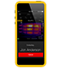

Fluke Connect®
Véalo. Guárdelo. Compártalo. Todos los datos en el terreno.
Fluke Connect® es la mejor manera de mantenerse en contacto con todo su equipo sin alejarse del terreno. Comience a ahorrar tiempo y a aumentar la productividad ahora mismo.
Con más de 20 herramientas de prueba de Fluke, Fluke Connect le permite identificar y diagnosticar problemas de manera rápida y confiable, y, a la vez, compartir con seguridad sus datos cuando lo desee, con quien desee.
Obtenga más información acerca de Fluke Connect »
|  |
Llamadas de video ShareLive™
Reúnase en el mismo lugar, aunque usted y su equipo estén en distintos lugares, solo con la llamada de video ShareLive™. |
|
|
Gráficos TrendIt™
Monitoree y difunda de manera instantánea anomalías intermitentes con los gráficos TrendIt™. |
|
Mediciones AutoRecord™
Realice una medición y elimine el papeleo gracias a las mediciones con AutoRecord™. |
|
 |
Almacenamiento Fluke Cloud™
Obtenga una protección de datos de clase mundial con el almacenamiento Fluke Cloud™ | |